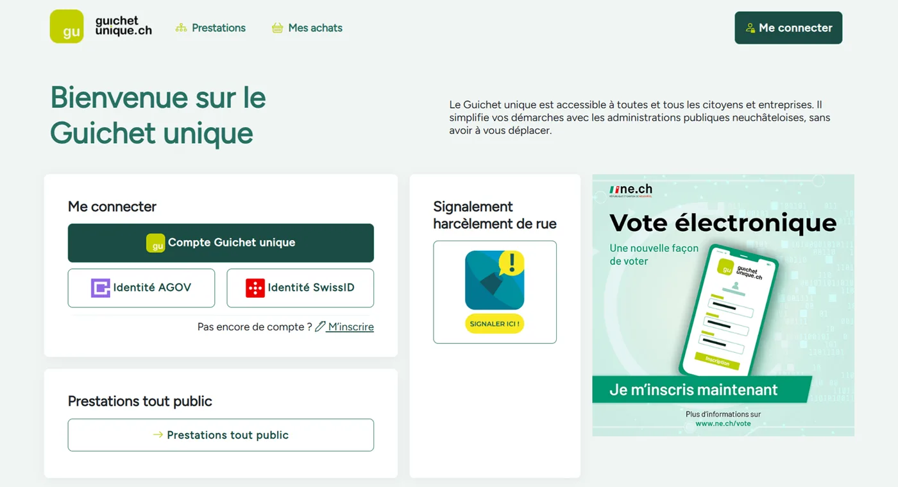
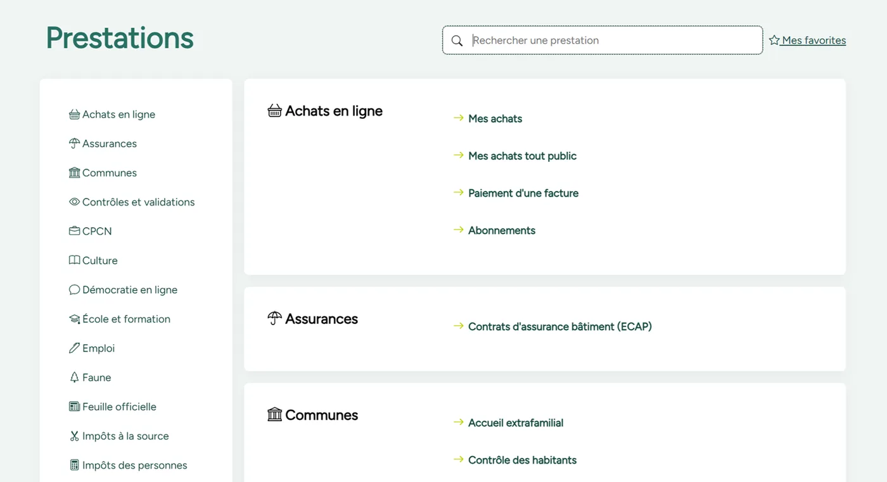

Project Overview
Guichet Unique is the official digital services platform for the canton of Neuchâtel, Switzerland. I am working on the chancellery section to implement electronic voting functionality, making democracy more accessible and secure for all citizens of the canton.
This project is part of Switzerland's broader initiative to modernize democratic participation through secure, verifiable e-voting systems that comply with strict federal regulations and industry standards.


E-Voting in Switzerland
Switzerland has a unique approach to electronic voting, balancing innovation with extremely high security standards. Since the revised ordinances on electronic voting came into force on July 1, 2022, only fully verifiable systems are permitted for e-voting under federal law.
Pilot Phase
E-voting trials are running in Basel-Stadt, St. Gallen and Thurgau (since June 2023), and in Graubünden (since March 2024). Neuchâtel joins them on 29 November 2026. Additional cantons including Lucerne and Geneva plan to launch trials in the near future.
Complete Verifiability
Swiss e-voting systems must provide complete verifiability, meaning voters can verify that their vote was correctly recorded, and independent observers can verify that all votes were correctly counted without compromising vote secrecy.
Federal Framework
The Federal Chancellery oversees e-voting implementation, ensuring all systems meet strict security requirements and comply with Swiss electoral law. Systems undergo rigorous testing, including bug bounty programs where security researchers actively search for vulnerabilities.
eCH Standards & Interoperability
The Guichet Unique e-voting platform is built in compliance with eCH standards, which are the official Swiss e-government standards ensuring interoperability, data quality, and consistency across all levels of government.
eCH-0155: Political Rights Data Standard
This standard defines the data structures for managing voting rights and elections across municipal, cantonal, and federal levels. It ensures consistent data representation throughout the entire electoral process.
eCH-0045: Voter and Election Register
Defines the format and structure for voter registration data, ensuring that voter eligibility information can be reliably exchanged between different government systems while maintaining data privacy and security.
Event Messages & Data Exchange
eCH standards define event messages for exchanging raw data from electronic ballot boxes to results determination systems. These standardized interfaces allow seamless integration with existing cantonal vote management systems.
Results Exchange Formats
Standards define unified exchange formats for voting and election results across all federal levels, enabling transparent aggregation and publication of results while maintaining audit trails and verification capabilities.
By implementing these eCH standards, the Guichet Unique platform ensures interoperability with other government systems, reduces development and maintenance costs, and provides a solid foundation for future enhancements.
In Production
Electronic voting returns to Neuchâtel on 29 November 2026, for a federal vote, running on Swiss Post's system. Registration goes through a Guichet Unique account — the same account AGOV and SwissID have been able to open online since May 2026.
7,100 registrations
6,500 of them in the two weeks following the announcement of 16 June 2026.
29 November 2026
The first vote open to the electronic channel since it was suspended in 2019.
30% of the electorate
The ceiling set by federal law — roughly 39,700 people out of the 115,000 Neuchâtel voters registered for federal votes.
A useful point of comparison: in February 2019, at the last vote before the suspension, 4,759 people actually cast an electronic ballot. Today's 7,100 are registrations rather than votes cast — the comparison has its limits, but the demand is measurable. Figures reported by swissinfo.ch in July 2026.
The reintroduction remains subject to federal authorisation, expected in September 2026.
Impact & Democratic Innovation
The Guichet Unique e-voting platform represents a significant step forward in digital democracy for Switzerland. By providing a secure, verifiable, and accessible voting channel, we're contributing to increased civic participation and strengthening democratic engagement.
Enhanced Accessibility
Swiss citizens abroad, people with disabilities, and citizens with mobility constraints can participate fully in cantonal elections and referendums from anywhere in the world.
Swiss Leadership in Digital Democracy
Switzerland's rigorous approach to e-voting, with complete verifiability and eCH standards compliance, positions the country as a global leader in secure electronic voting systems.
Increased Participation
By making voting more convenient and accessible, e-voting has the potential to increase voter turnout, particularly among younger generations and Swiss citizens living abroad.
This project contributes to the future of Swiss democracy by combining cutting-edge technology with Switzerland's tradition of direct democracy and strong security culture.